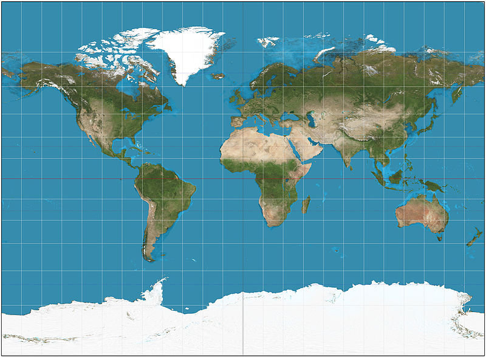

<link rel="import" href="../components/polymer/polymer.html">
<link rel="import" href="../components/basic-culture-selector/basic-culture-selector.html">

<polymer-element name="world-map" attributes="culture" noscript>

<template>

  <style>
  :host {
    background: white;
    box-shadow: 5px 5px 10px rgba( 0, 0, 0, 0.5 );
    box-sizing: border-box;
    display: block;
    position: relative;
  }

  #map {
    display: block;
    opacity: 0.75;
    width: 100%;
  }

  #cultureContainer {
    background: white;
    bottom: 0;
    left: 0;
    padding: 1em;
    position: absolute;
    right: 0;
  }

  #cultureSelector {
    display: block;
    max-width: 100%;
  }
  </style>

  
  <div id="cultureContainer">
  <basic-culture-selector id="cultureSelector" culture="{{culture}}">
    <div>Pick your preferred language/location:</div>
  </basic-culture-selector>
  </div>

</template>

</polymer-element>